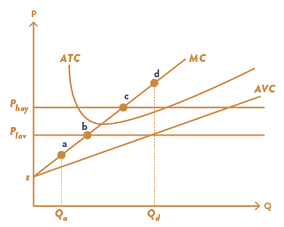

Kapittel 7 - Produksjonsteori#
Bedriftens innteker. Når bedriften selger én enhet på produktmarkedet får den en fast pris på \(P\). Med \(Q\) solgte enheter får bedriften en inntekt på \( PQ.\)
Det vil si at gjennomsnittsinntekt per enhet solgt er \(\frac{PQ}{Q}=P\), og grenseinntekten er \(\frac{dPQ}{dQ}=P\).
For å produsere goder eller tjenester må bedriften ansette produksjonsfaktorer, noe som gir bedriften en kostnad. Kostnaden kan være fast, dvs uavhengig av hvor mange enheter som produseres: \(FC=rK_0.\) Produksjonsavhengige kostnader er variable kostnader \(VC\) som avhenger av mengden produsert. Totale kostnader blir da summen av disse: \(TC=FC+V.\)
Dersom bedriften produserer én enhet ekstra ut fra dagens produksjonsnivå vil økningen i kostnaden kjennetegnes av grensekostnaden (MC):
$\(\frac{dC}{dQ}=\frac{dVC}{dQ}.\)$
Beløpet som det koster bedriften per enhet produsert er den totale gjennomsnittskostnaden (\(ATC\)), og dette er summen av faste gjennomsnittskostnader (\(AFC\)) og variable gjennomsnittskostnader (\(AVC\)): $\( ATC = AFC+AVC = \frac{FC}{Q} +\frac{AC}{Q}.\)$
Profittmaksimering#
På kort sikt vil minst én produksjonsfaktor være fast, og dette vil utgjøre en del av bedriftens faste kostnader. Dersom bedriften produserer et produkt ved å kombinere kapital og arbeidskraft, og har en fast mengde med kapital på kort sikt (\(K_0\)) vil \(rK_0\) være en del av bedriftens faste kostnad. Bedriften kan endre produksjon kun ved å endre mengde arbeidskraft som er brukt i produksjonsprosessen.
Vi kan skrive fortjenesten som en funksjon av produsert mengde \(F(Q)\):
Vi kan se at fortjeneste er positiv dersom \(PQ>VC+FC\), dvs
Prisen (gjennomsnittsinntekten) må være større enn gjennomsnittskostnaden for positiv fortjeneste. I tillegg til dette er vi ute etter verdien på \(Q\) som maksmimerer \(F(Q)\). Betingelsen for maksinal profitt er
Med ord: prisen (her grenseinntekten) må være lik grensekostnaden for et maksimum. Dersom \(P>MC\) kan bedriften øke fortjeneste ved å selge en ekstra enhet, og produksjon kan ikke ha vært optimal. Dersom \(P<MC\) har bedriften tapt penger på den siste enheten solgt, og kunne ha redusert produksjon for å øke fortjeneste. Da kan ikke denne produksjonen ha vært optimal.
Profittmaksimering og lønnsomhet#
Vi har følgende produktfunksjon:
Fra forelesning Kapittel 6, matteboks 6.1 vet vi at grensekostnaden er gitt ved
Profittmaksimum der \(P=MC\), som blir
# Optimal profitt
import sympy as sp
Q, K, K_0, L, P, w,r,z = sp.symbols('Q K K_0 L P w r z', real=True, positive=True)
def F(Q):
return (P-(2*w*Q)/K_0)-z
F(Q)
# Optimalt kvantum
Q_sol=sp.solve (F(Q),Q)[0]
Q_sol

Figuren vis optimal tilpasning på lang sikt i punkt \(c\), der \(P_{høy}=MC\)
Bedriftens tilpasning i faktormarkedet på kort sikt#
La oss anta at bedriften produserer en vare av Arbeidskraft (L) og Kapital (K), og at kapitalmengden er fast på kort sikt \(K=K_0\). Vi kan nå se på hva det er som bestemmer hvor mye arbeidskraft bedriften vil etterspørre for å maksimere fortjeneste på kort sikt.
Sett opp fortjenestesfunksjonen på kort sikt:
$\( F(L) = P Q(L, K_0) - (rK_0 + w L)\tag{7}\)$
hvor \(Q(L, K_0)\) er produktfunksjonen på kort sikt, \(rK_0\) er faste kostnader og \(wL\) er variable kostnader.
Sett opp førsteordensbetingelsen:
Venstresiden er verdien av grenseproduktet som den siste enheten med arbeidskraft produserer, og høyresiden er grensekostnaden til den siste enheten med arbeidskraft.
Løsningen til (8) er \(L(K_0, w, P)\), dvs optimal mengde arbeidskraft etterspurt på kort sikt.
Eksempel#
En bedrift produserer en vare med produktfunksjon
Videre setter vi \(K_0=1, w=3, r=5\).
# Finn etterspørsel etter arbeid (L)
# Overskuddsmaksimering på kort sikt
import sympy as sp
K, L, P, w,r = sp.symbols('K L P w r', real=True, positive=True)
def prod(K,L):
return L**(0.5)*K**(0.5)
def profitt_ks(L, K, P, w, r):
return P*prod(K,L) - w*L-r*K
profitt_ks(L,K, P, w, r)
# maksimer profitten mhp arbeidskraft (L)
dpi_L=sp.diff(profitt_ks(L,K, P, w, r),L)
foc_L=sp.Eq(dpi_L,0)
foc_L
# Løs for L
L_ks=sp.solve(foc_L,L)[0]
L_ks
L_sol=L_ks.subs([(P,10),(K,1)])
L_sol
def mrp(L,K, P):
return (.5*P*K**.5)/L**.5
mrp(L,K, P)
import numpy as np
from matplotlib import pyplot as plt
# Vi plotter FOB for k=1
def mrp(L,K, P):
return (.5*P*K**.5)/L**.5
n=np.linspace(0.1,10,100)
fig, ax = plt.subplots()
ax.set_ylabel('w (NOK)', loc='top', rotation = 0)
ax.set_xlabel('Arbeidskraft (L)', loc='right')
ax.set(xlim=(0,10))
ax.set(ylim=(0,10))
ax.spines['top'].set_color('none')
ax.spines['right'].set_color('none')
ax.plot(n, mrp(n, 1, 10), label = 'Etterspørsel etter N (p=10)')
ax.hlines(3,0,10, color= 'red', label = 'w=3')
ax.hlines(5,0,10, color= 'gray', label = 'w=5')
ax.vlines(float(L_sol.subs(w,5)),0,5, linestyle='dashed')
ax.vlines(float(L_sol.subs(w,3)),0,3, linestyle='dashed')
ax.set_title('Etterspørsel etter arbeidskraft (K=1)')
ax.legend(loc='best');